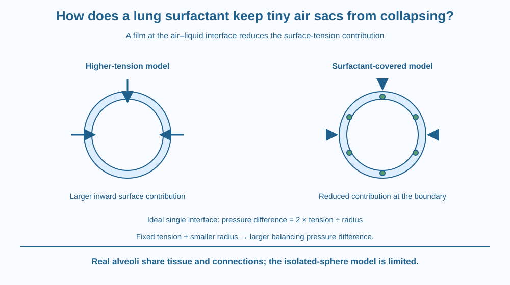

Explain how a specialised surface film helps tiny lung air spaces remain stable. Connect surfactant, the air–liquid interface and surface tension without treating a lung as a collection of ordinary soap bubbles. Build a paper model, with no breathing test or chemical experiment.
An alveolus is a tiny air space with a moist inner surface. At that air–liquid boundary, surface tension contributes a tendency for the exposed surface to shrink. Yet healthy lungs can repeatedly expand without every small air space simply collapsing.
A specialised film helps solve this mechanical problem. Its importance is not that it supplies oxygen or acts as a rigid prop. It changes the behaviour of the surface itself.
The question is why changing a very thin interface can change the effort and stability of a much larger organ.
Alveoli are small air spaces in the lungs. Their walls are thin and moist. The lung's complete function involves several processes, but this lesson isolates the mechanical role of the lining surface rather than repeating gas exchange or the reason breathing rate rises during exercise.
At an air–liquid interface, interactions between liquid molecules produce surface tension. It tends to reduce surface area and therefore contributes to an inward tendency in a curved air space. Surface tension is a property of an interface, not a separate elastic string tied around the lung.
Pulmonary surfactant is a mixture of lipids and proteins produced by specialised alveolar cells called type II cells. It spreads at the lining interface. Its film lowers surface tension and helps the lung expand more easily while reducing the tendency of air spaces to collapse.
This is different from a soap-cleaning lesson. Here the important effect is the mechanical behaviour of an air–liquid surface in a living organ. We do not need a dirt droplet or a micelle diagram to explain alveolar stability.
A useful idealisation compares spherical air spaces at the same surface tension. The pressure difference needed to balance that tension increases as radius becomes smaller. In the simplest single-interface model, the relationship is written pressure difference = 2 × surface tension ÷ radius.
The equation is a model, not a complete description of real lung geometry. Alveoli are interconnected, share walls and sit within elastic tissue. We must not infer that every alveolus behaves like a perfectly isolated spherical bubble.
Surfactant's surface effect changes as the film is compressed and expanded. Its behaviour helps stabilise air spaces across the breathing cycle, especially as surfaces become smaller. A single constant-tension drawing would miss this useful feature of the biological film.
Lowering the surface contribution also reduces part of the work of breathing. The lung still has tissue elasticity, airway resistance and other mechanical requirements. Surfactant does not make breathing require no effort or guarantee that every respiratory problem has the same cause.
The lesson gives no medical dose, disease diagnosis or treatment instruction. A surface-film mechanism is useful biological knowledge, but it cannot determine an individual's lung condition from a paper diagram or an informal breath-holding comparison.
Draw one large circular air space and one smaller one. Around each, mark inward arrows representing the surface-tension contribution. Initially label their surface tensions equal.
Use the radius relationship to explain why the smaller model would require a greater balancing pressure difference under that assumption. Then add a surfactant film and mark the reduced tension contribution.
Finally, place the circles in a shared tissue region with connections. This final addition reminds you that the bubble comparison isolates one effect. It should not replace the lung with a bag of independent balloons or imply that surfactant physically fills the air spaces.
The SVG contrasts a high-tension air–liquid interface model with a surfactant-covered interface. Inward arrows are shorter in the reduced-tension version. A separate radius comparison identifies the ideal fixed-tension relationship.
Small film markers sit along the boundary rather than filling the centre. They represent interfacial action, not cells blocking the air space. The surrounding region acknowledges tissue support without attempting a full anatomical drawing.
The colours and arrows are qualitative. The illustration contains no pressure values, clinical threshold or suggestion that students test their own lung function.

In an Indian classroom, a familiar soap-bubble picture can introduce curved surfaces, but the comparison needs limits. An ordinary soap bubble has two air–liquid surfaces, while the simple alveolar interface model used here has one. Copying a bubble formula without examining the boundary can mislead.
The lesson also shows why biology and physics meet at small structures. A microscopic film can alter the mechanical effort required for repeated organ movement.
No student should make inhalable sprays, taste household detergents or perform a breath-holding challenge for this topic. Paper circles and arrows reveal the mechanism without putting substances near anyone's mouth or asking classmates to compare medical signs.
Use paper, a pencil and two colours. No liquid, blowing or breathing measurement is needed.
Ask a partner to explain whether the film acts at the boundary or fills the central air space. Then identify which assumption allowed the first radius comparison. The activity is about a mechanical relation, not ranking anyone's breathing ability.
Why is a soft surface film different from a rigid support ring? Both might be drawn near a boundary, but their mechanisms differ. Explain the film's effect on the interface rather than calling it a tiny bone.
Now imagine a model that uses constant surface tension throughout expansion and contraction. What important surfactant behaviour would it miss? Describe why a living surface can respond differently as its area changes without claiming that the simple drawing captures every lung force.
What is a major mechanical effect of pulmonary surfactant?
Answer: C — The interfacial film reduces the surface-tension contribution to collapse and inflation effort.
At equal surface tension, why does a smaller ideal sphere need more balancing pressure?
Answer: A — The ideal single-interface relation is pressure difference = 2 × tension ÷ radius.
A drawing treats alveoli as isolated perfect bubbles. What should be added?
Answer: B — Real alveoli are interconnected structures, so the isolated-sphere picture captures only part of their mechanics.
Create a two-part explanation of alveolar stability: first the ideal curved-interface relation, then the biological film and shared tissue context. Mark the assumptions beside the model equation.
Include a sentence explaining reduced breathing work and a sentence explaining why the model is incomplete. Your explanation must not become a medical test or advise adding any household substance to the lungs. The goal is to identify a specific surface mechanism safely.
The smallest model air space is not automatically the easiest to keep open. With the same surface tension, greater curvature can require a larger balancing pressure difference. Changing the interface therefore helps solve a problem that would remain hidden if we looked only at the total amount of air in the lungs.
Pulmonary surfactant lowers air–liquid surface tension, helping stabilise alveoli and reduce breathing work; real lungs also depend on shared tissue and other mechanical properties.